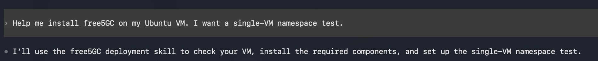
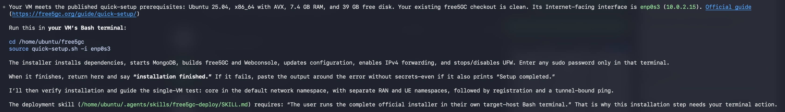
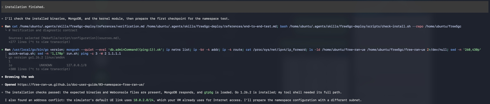
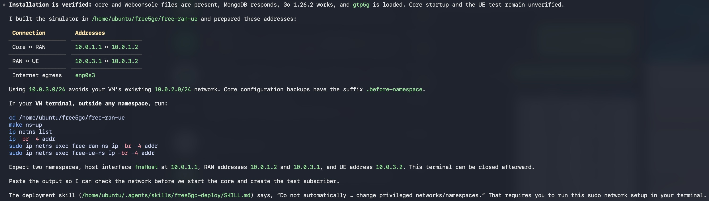
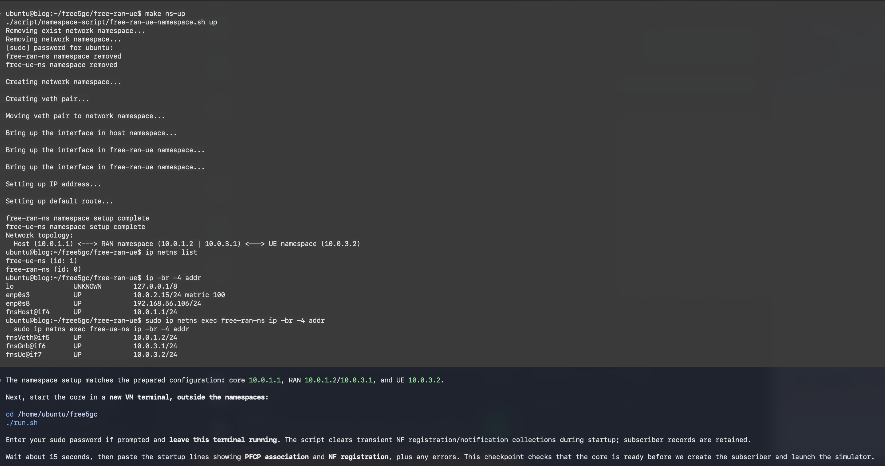
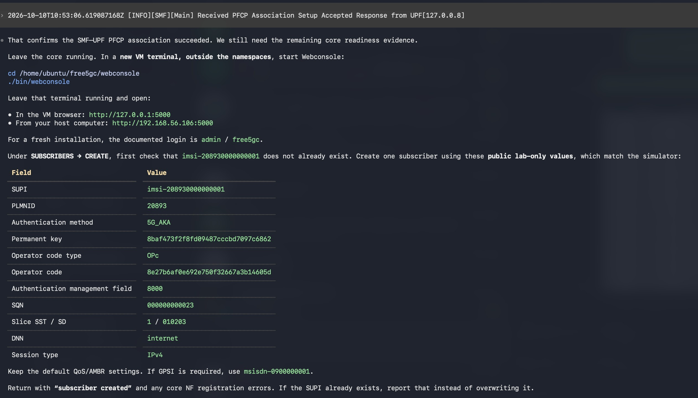
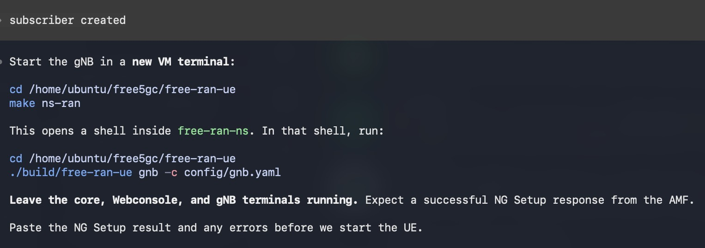
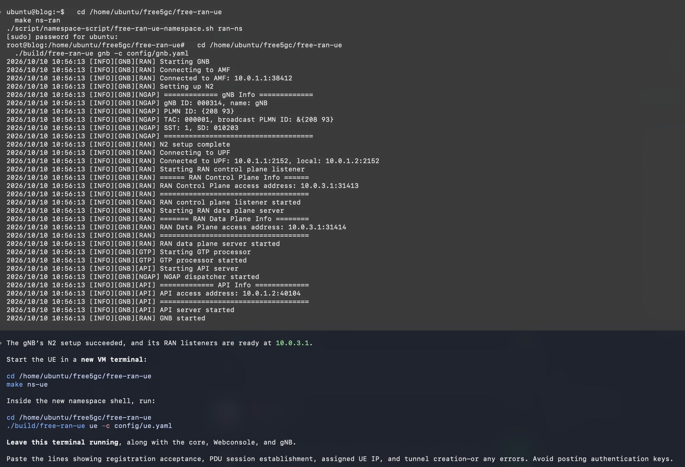
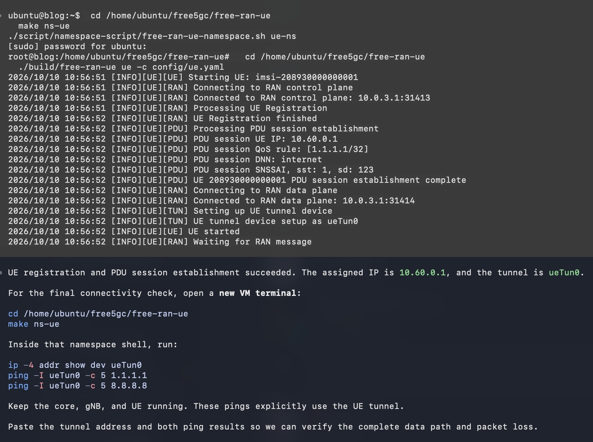
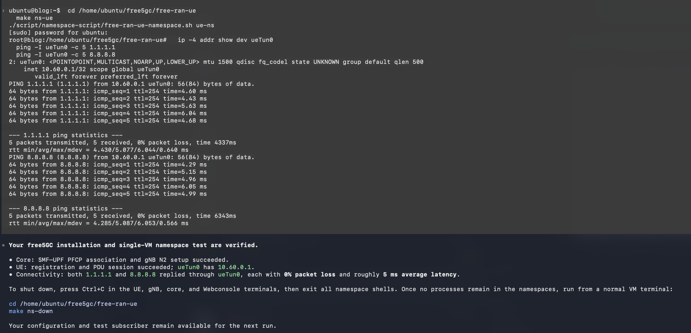

Building the free5GC Deployment Skill: Guiding Beginners to an End-to-End Test
Note
Author: Meng-Han, Hsieh
Date: 2026/08/12
Abstract
Our goal in building free5gc-deploy is to help beginners deploy free5GC and complete an end-to-end (E2E) connectivity test with an AI agent's guidance. We want to reduce the learning cost of a first deployment: deciding which instructions apply, adapting network addresses, understanding terminal output, and knowing what to check next.
The skill organizes official deployment knowledge into seven workflow stages, supported by focused reference documents and read-only diagnostic scripts. It gives the AI agent a way to guide the user from environment inspection through installation, core startup, UE registration, PDU session establishment, and traffic through the UE tunnel.
This article explains the design and follows an actual single-VM conversation. The walkthrough includes two useful discoveries—a tool-shell PATH issue and an overlapping subnet—and ends with successful tunnel-bound pings to two external destinations.
Background: Why a First Deployment Needs Guidance
A free5GC deployment connects several layers: the Ubuntu environment, Go tools, MongoDB, the gtp5g kernel module, core network functions (NFs), subscriber records, and a RAN/UE simulator. A newcomer may follow individual commands successfully while still being uncertain whether the complete system works.
For example, a built UPF binary does not establish that the kernel module is ready. An accepted SMF–UPF association does not establish that a UE can register. A successful ping from the VM's ordinary shell does not establish that packets traveled through the simulated UE's data session.
The skill addresses these gaps by pairing each action with its purpose and expected evidence. Beginners can learn the deployment process as they run it, without first having to reconstruct every dependency from multiple documents. This is the intended benefit; the walkthrough below demonstrates one successful deployment and connectivity test, rather than a measured reduction in onboarding time.
flowchart LR
Request[Beginner's deployment request] --> Skill[free5gc-deploy]
Docs[Official guides and selected source revisions] --> Skill
Evidence[VM observations and user results] --> Skill
Skill --> Next[Concrete next step and expected result]
Next --> User[User operates the deployment]
User --> EvidenceHow We Built the Skill
1. Define the Scope Around a Beginner's Outcome
We defined the skill around installation, validation, troubleshooting, and a guided free-ran-ue (gNB/UE simulator) connectivity test on Ubuntu. It supports both a single VM with network namespace isolation and a two-VM topology with the core and simulator on separate machines.
The target outcome determines the stopping point. An install-only request can finish with installation evidence and an explicit statement that E2E remains untested. A request for a full connectivity test continues until registration, session, tunnel, and traffic evidence are available.
We also distinguish the agent's workstation from the deployment target. The agent may have local file access, remote access, or only the user's pasted output. Instructions must work with those differences instead of assuming that the agent always runs on the Ubuntu VM.
2. Separate Workflow Instructions, References, and Diagnostics
The package has three responsibilities:
free5gc-deploy/
├── SKILL.md # Scope, boundaries, workflow, state
├── references/
│ ├── sources.md # Official sources and reviewed revisions
│ ├── preflight.md # Target environment and topology
│ ├── installation.md # Official installer and user handoff
│ ├── verification.md # Evidence levels and diagnostic contract
│ ├── end-to-end-test.md # Subscriber, simulator, and connectivity
│ └── troubleshooting.md # Diagnosis and focused repairs
└── scripts/
├── collect-env.sh # Environment observations
├── check-install.sh # Installation observations
├── common.sh # Shared diagnostic functions
├── inspect-artifacts.py # Inspect expected build outputs
└── check-config.py # Check supported static YAML relationships
SKILL.md provides the compact control flow. The agent reads the references needed for the current stage, keeping unrelated installation or troubleshooting details out of the immediate conversation. The scripts collect repeatable observations, while the agent interprets them in the context of the user's request.
This structure also makes maintenance more focused: a simulator configuration change belongs in the relevant reference and checks, while the overall workflow can remain recognizable to users.
3. Reconcile Documentation with the Selected Checkout
We organized an official source index and recorded reviewed source revisions. Deployment instructions can change, and older guide examples may differ from the current YAML schema or startup commands. The skill therefore asks the agent to inspect the selected checkout before preparing commands.
Several distinctions recorded in the references affect a first deployment directly:
- The UPF GTP-U bind address is an N3/N9 address. The N6 egress interface is a separate routing/NAT choice.
- The reviewed namespace script creates
free-ran-nsandfree-ue-ns; the core, MongoDB, and Webconsole stay in the default network namespace. - The actual UPF YAML key is
gtpu.ifList; a historical namespace example containsifList. - The selected core can manage per-DNN NAT/FORWARD rules through its UPF configuration, so old broad iptables recipes should not be added blindly.
- Current build outputs and configuration fields must be read from the checkout rather than copied mechanically from older examples.
The source index records these differences and their source pins. A source review establishes what the instructions describe; runtime evidence establishes whether a particular VM deployment works.
4. Make Observation and User Operation Explicit
The bundled diagnostics are read-only and noninteractive. They do not invoke the installer, start NFs, create subscribers, or alter network namespaces. The complete official installer runs in the user's own target-host Bash terminal, preserving its source semantics and interactive behavior.
For a beginner, this produces a clear division of work: the AI agent explains and checks; the user performs the system operation and returns its result. Password entry stays in the user's terminal. Existing configuration changes and subscriber records are preserved.
sequenceDiagram
participant User
participant Agent as AI agent
participant VM as Ubuntu VM
User->>Agent: Request installation and an E2E test
Agent->>VM: Read-only environment checks when accessible
VM-->>Agent: Host, routes, tools, and repository observations
Agent-->>User: Explain installer effects and provide actual command
User->>VM: Run official installer in Bash
User-->>Agent: Installation finished, or nearby error output
Agent->>VM: Check installed artifacts and dependencies
Agent-->>User: Guide the next E2E checkpoint
User->>VM: Perform the checkpoint
User-->>Agent: Return logs or interface/traffic evidence
Agent-->>User: Interpret results and choose the next stepThe Seven Workflow Stages
These stages are a conversational workflow, not a background service or a required state daemon. The agent keeps a compact record of the target, topology, source revisions, local changes, addresses, current stage, pending action, and evidence. That record helps the conversation resume without asking the beginner to repeat known information.
flowchart TB
subgraph Install[Installation]
direction TB
P["1. PREFLIGHT<br/>Inspect target and choose topology"]
I["2. WAITING_FOR_INSTALL<br/>User runs the official installer"]
V["3. VERIFY_INSTALL<br/>Check artifacts and dependencies"]
P --> I --> V
end
subgraph Test[End-to-end connectivity]
direction TB
G["4. GUIDE_E2E<br/>Guide one checkpoint at a time"]
R["5. WAITING_FOR_TEST_RESULT<br/>Collect logs, tunnel, and traffic evidence"]
G --> R
end
C["7. COMPLETE / PARTIAL<br/>Report evidence for each requested level"]
V --> G
R --> C
subgraph Recovery[Recovery from any stage]
direction TB
F["Error or failed checkpoint"]
T["6. TROUBLESHOOT<br/>Diagnose, repair, and recheck"]
Resume["Resume the affected workflow stage"]
F --> T --> Resume
end
classDef inspect fill:#e8f0fe,stroke:#476582,color:#172b4d
classDef waiting fill:#fff4db,stroke:#b8860b,color:#513c06
classDef recovery fill:#fce8e6,stroke:#b85450,color:#612522
classDef result fill:#e7f3e8,stroke:#4b8751,color:#214b27
class P,V,G inspect
class I,R waiting
class F,T,Resume recovery
class C resultThe main path flows from installation to E2E evidence and a final assessment. The separate recovery path applies to any failed stage; after a successful repair, the agent resumes that stage. During E2E guidance, stages 4 and 5 repeat for each checkpoint until the requested evidence is available.
1. PREFLIGHT — Understand the Target Before Installing
Preflight establishes where the deployment will run and which topology the user wants. The agent inspects Ubuntu version, CPU architecture and exposed AVX, kernel, memory, storage, network addresses/routes, tools, existing repositories, MongoDB, and gtp5g state.
Network interface selection follows topology and route evidence. With multiple NICs, the agent must identify RAN reachability and data-network egress rather than choosing the first interface name it sees. Unsupported or unresolved prerequisites stop the installation path until clarified.
Learning benefit: the beginner sees why a specific interface and setup apply to their VM. Unavailable observations remain unknown instead of becoming invented compatibility claims.
2. WAITING_FOR_INSTALL — Hand Off the Complete Official Installer
The agent prepares a command using the confirmed repository path and interface, explains the selected installer's effects, and asks the user to return after running it. In our deployment the command was:
cd /home/ubuntu/free5gc
source quick-setup.sh -i enp0s3
Those values belong to this VM. The skill instructs the agent to substitute actual values for another deployment. It preserves source rather than replacing the installer with bash, a pipeline, or a reconstructed set of installation stages.
The waiting state matters because the agent cannot infer the completion of a command in another terminal. The user's reply resumes verification; it is not itself proof of a successful installation.
Learning benefit: the user gets one concrete installation action, an explanation of its system changes, and a clear way to return with errors.
3. VERIFY_INSTALL — Check What Was Installed
After the user returns, the agent checks expected build outputs, Webconsole files, tool versions, MongoDB usability, gtp5g for the running kernel, repository changes, and supported basic configuration relationships.
The diagnostic vocabulary preserves uncertainty:
| Result | Meaning |
|---|---|
PASS |
The particular check has supporting evidence |
FAIL |
The check found a proven problem |
UNKNOWN |
Available evidence does not resolve the check |
UNAVAILABLE |
A tool, permission, or timeout prevents observation; an unknown subtype |
Summary counts describe observations. Even a successful static check does not prove NF readiness or UE connectivity. The checker deliberately emits an unknown runtime observation because it does not perform those tests.
Learning benefit: the beginner learns to distinguish installed files from a running network and can locate a failed dependency before starting the simulator.
4. GUIDE_E2E — Teach One Checkpoint at a Time
This stage guides simulator build/configuration, network preparation, core startup, subscriber creation, gNB setup, and UE startup. Each instruction specifies the host, namespace, working directory, privilege, expected result, and whether the terminal must stay open.
For a single VM, separate terminals are useful for long-running processes, but namespace entry provides network isolation. The skill makes that distinction explicit so a newcomer can understand where each command runs.
flowchart TD
Build[Simulator built and core egress checked] --> Net[Addresses and namespace topology verified]
Net --> Core[Start core and inspect readiness evidence]
Core --> Sub[Create matching test subscriber]
Sub --> Gnb[Start gNB and confirm N2 setup]
Gnb --> Ue[Start UE and inspect registration/session]
Ue --> Tunnel[Observe actual tunnel and assigned IP]
Tunnel --> Ping[Ping explicitly through the UE tunnel]Learning benefit: every checkpoint introduces a small part of the system and a recognizable success condition. Failures can be investigated before dependent steps add more confusing output.
5. WAITING_FOR_TEST_RESULT — Collect Evidence from the UE Path
The agent asks for registration/session logs, the actual UE tunnel and address, and ping statistics explicitly bound to that tunnel. It uses the observed interface name; a configured base name such as ueTun may become ueTun0 at runtime.
In a single-VM deployment, the final ping runs inside the UE namespace. An ordinary host ping only verifies the host's own egress and cannot substitute for this result.
Learning benefit: the user learns what an E2E claim needs: successful signaling and packets through the data path, with packet loss reported visibly.
6. TROUBLESHOOT — Repair the Failed Stage
Troubleshooting is available whenever a problem appears, including before installation verification. Its loop is evidence → hypothesis → check → minimal repair → recheck. Reinstallation is not the default response.
flowchart LR
E[Observe the failure] --> H[Form a specific hypothesis]
H --> D[Check relevant evidence]
D --> F[Apply the smallest justified repair]
F --> R[Recheck the failed stage]
R -->|Still failing| H
R -->|Resolved| N[Resume the workflow]For example, an unavailable go command may reflect the tool shell's PATH. A failed data-path check may involve N6 routing or forwarding even after registration succeeds. The skill keeps those possibilities separate and preserves existing deployment data while investigating.
Learning benefit: the beginner can understand why a repair is proposed and avoid restarting the entire deployment for a localized issue.
7. COMPLETE / PARTIAL — Report Each Level Separately
The final assessment separates installation, core startup, and E2E results:
| Level | Evidence to seek |
|---|---|
| Installation | Expected artifacts, appropriate tools, MongoDB usability, kernel module, and supported configuration checks |
| Core startup | Required NF processes and logs, NRF/SBI registration, applicable PFCP association, and AMF N2 readiness |
| E2E | UE registration, matching PDU session/address, actual tunnel, and replies explicitly through that tunnel |
COMPLETE means the requested scope has sufficient evidence. PARTIAL means work or evidence remains. One PFCP association line proves that association; it does not establish every NF's health. The agent should report the scope of each observation rather than turning a single successful line into a universal verdict.
Learning benefit: the user leaves with a clear account of what worked, what was tested, and what still needs attention.
A Real Conversation: From a Request to UE Connectivity
This example uses Codex to demonstrate the workflow. The skill's instructions describe an AI-agent workflow that can also guide other coding assistants, such as Claude Code.
Request and Installation Handoff
The walkthrough started with a simple request:
Help me install free5GC on my Ubuntu VM. I want a single-VM namespace test.
Codex read the deployment skill and entered preflight. The VM exposed x86_64 with AVX, ran Ubuntu 25.04 with kernel 6.14.0-37-generic, and had roughly 7.4 GB memory and 39 GB available storage. The existing free5GC checkout was clean. Route evidence identified enp0s3, with address 10.0.2.15, as Internet egress.

Figure 1: The user's requested topology establishes the deployment scope.
The agent explained the installer effects, including dependencies, MongoDB, builds, forwarding, configuration changes, and stopping/disabling UFW, then handed over the full official command. The user ran it in the VM's Bash terminal.

Figure 2: Installation instructions include the actual path/interface and a clear return checkpoint.
Verification Reveals Environment-Specific Details
After the user replied that installation had finished, Codex checked binaries, Webconsole files, MongoDB, and gtp5g. Initially its tool shell could not find Go. Running /usr/local/go/bin/go version showed Go 1.26.2, and adjusting the diagnostic PATH made the tool observable. A later restricted PATH also omitted administrative tool directories, which affected iptables and modinfo observations until corrected.
The final installation checker summary was:
SUMMARY pass=39 fail=0 unknown=1 (observations only)
The remaining unknown concerned runtime tests. Separately, a MongoDB ping returned 1. These checks supported proceeding with the E2E test while keeping core startup and UE connectivity unverified.

Figure 3: Verification distinguishes a PATH issue from a missing installation and discovers an address overlap.
Adapt the Namespace Topology to the VM
The reviewed simulator recipe used 10.0.2.0/24 for its RAN–UE link. Our VM already used that subnet on enp0s3. Rather than copy the example unchanged, the agent prepared 10.0.3.0/24 for the RAN–UE link, updated the simulator YAML and namespace script consistently, and removed a redundant connected-route addition in that script.
Core N2/N3 addresses changed to 10.0.1.1; the external N6 interface remained enp0s3. Core configuration backups used the suffix .before-namespace. The agent prepared local files and built the simulator; the user performed privileged namespace setup in the terminal.
flowchart LR
subgraph Default[Default network namespace]
Core[AMF N2 / UPF N3: 10.0.1.1]
DB[MongoDB and Webconsole]
Egress[N6 egress: enp0s3 / 10.0.2.15]
end
subgraph Ran[free-ran-ns]
Gnb[gNB: 10.0.1.2]
Link[RAN UE-facing address: 10.0.3.1]
end
subgraph Ue[free-ue-ns]
Sim[Simulator link: 10.0.3.2]
Tun[ueTun0: 10.60.0.1]
end
Core <-->|N2 / N3 over veth| Gnb
Gnb --- Link
Link <-->|Simulator control / data link| Sim
Sim --- Tun
Core -->|UPF data-network egress| Egress
Egress --> DN[External destinations]The RAN–UE link address 10.0.3.2 and PDU-session address 10.60.0.1 serve different purposes. The former connects simulator components; the latter is the UE address used by the final tunnel-bound traffic test.

Figure 4: Concrete addresses replace generic examples while preserving the external egress interface.
The user ran make ns-up and returned namespace/interface observations. They showed fnsHost at 10.0.1.1, RAN interfaces at 10.0.1.2 and 10.0.3.1, and the UE-side interface at 10.0.3.2.

Figure 5: Actual interface observations confirm the topology before core startup.
Core Association and Subscriber Preparation
The user started the core outside the namespaces and returned an SMF log reporting an accepted PFCP association response from UPF 127.0.0.8. Codex identified that as association evidence and explicitly said remaining core readiness evidence was still needed.
Next, the user started Webconsole in the default network namespace and created a subscriber using public test-only values matching the simulator. The guide explained matching identity/authentication fields, PLMN, slice, and DNN, and asked the user to check for an existing SUPI before creating a record.

Figure 6: The subscriber checkpoint connects Webconsole fields to simulator configuration. Authentication values shown here are public test data for an isolated test environment.
gNB Setup and UE Registration
After subscriber creation, Codex instructed the user to enter free-ran-ns and launch the gNB. It specified which terminals had to stay running and requested the N2 setup result before launching the UE.

Figure 7: Namespace entry, command location, and terminal lifetime are explained together.
The returned gNB logs showed connection to AMF 10.0.1.1:38412 and completed N2 setup. Its UE-facing control/data listeners used 10.0.3.1. The UDP UPF connection log alone was not treated as a successful data-path test; the UE traffic check came later.

Figure 8: N2 setup evidence allows the walkthrough to proceed to UE registration.
Inside free-ue-ns, the user launched the UE. The logs reported registration completion, PDU session establishment for DNN internet, assigned address 10.60.0.1, and tunnel device ueTun0.

Figure 9: The next test uses the observed tunnel name and assigned address.
Final Traffic Evidence
In another shell inside free-ue-ns, the user ran:
ip -4 addr show dev ueTun0
ping -I ueTun0 -c 5 1.1.1.1
ping -I ueTun0 -c 5 8.8.8.8
The interface had 10.60.0.1/32, and both ping outputs explicitly showed traffic originating from that address through ueTun0.
| Destination | Packets sent / received | Loss | Average RTT |
|---|---|---|---|
1.1.1.1 |
5 / 5 | 0% | 5.077 ms |
8.8.8.8 |
5 / 5 | 0% | 5.087 ms |
These are observations from five packets per destination in this connectivity test, not a performance benchmark. Together with the preceding registration/session evidence, they support the demonstrated UE connectivity result.

Figure 10: The final checkpoint verifies traffic through the UE tunnel and reports packet loss.
Cleanup guidance followed the same explicit approach: stop UE, gNB, core, and Webconsole; exit namespace shells; confirm no processes remain; then run make ns-down from the default namespace. Configuration and the test subscriber are retained for reuse.
What This Design Gives Beginners
The skill lowers the amount of deployment knowledge a newcomer must assemble before making progress. Paths and interfaces come from their environment. Each terminal has a stated role. Logs have an explanation. Errors lead to a focused investigation. Completion depends on visible evidence.
The deployment example also shows why this guidance must remain adaptive. A fixed subnet example would have overlapped the VM's network; a missing command observation could have prompted an unnecessary Go reinstall. Reading actual routes, checking the installed executable, and rechecking the affected observation kept the walkthrough moving.
The package describes two-VM guidance as well, but this article demonstrates the single-VM topology only. New source revisions, Ubuntu/package combinations, and kernel/module combinations require renewed review and runtime validation. Future maintenance should preserve the seven-stage structure while updating its references and diagnostics with those changes.
Conclusion
We built free5gc-deploy around a beginner's concrete goal: deploy free5GC and demonstrate an E2E UE connectivity test. Its seven workflow stages organize the next action, the evidence needed to proceed, and the response to failure. Focused references provide deployment knowledge, and read-only scripts make observations repeatable.
In the demonstrated conversation, that structure guided the user from an initial request through installation verification, namespace adaptation, subscriber preparation, gNB setup, UE registration, and successful tunnel-bound traffic. The same checkpoints also teach the user how the components fit together, making a first deployment easier to follow and a subsequent failure easier to diagnose.
References
- free5gc-deploy skill and supporting files
- Skill workflow definition
- Reviewed sources, revisions, and documentation differences
- Official free5GC quick setup
- free-ran-ue user guide
- Single-VM namespace guide
About
Hello! I'm Meng-Han Hsieh, and I've recently started exploring 5G technology and engaging with the free5GC community. I hope you find this blog post useful, and don't hesitate to reach out if you have recommendations for improvement.
Connect with Me
- GitHub: Meng-Han, Hsieh